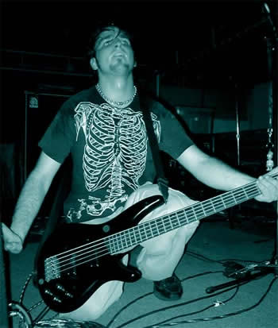

|

Would you call it fate... coincidence...the
alignment of the stars... the smiling of the rock gods...or just pure
luck when a chance meeting at a local rock show leads to your first audition
with your first band and lands you in a group destined for greatness?
Such is the story that finds me slapping bass with Hollow Days.
Brand new to the Gainesville music scene,
I wandered into a Downpsychol show to satisfy a craving for some good
solid rock. There I met Joe, Luke & Josh. Two days later I got a call,
and the rest will soon be, as they say, Rock & Roll history.
I picked up the guitar for the first time
in my mid-teens, when I heard Mike McCready wail out State of Love and
Trust for the first time, and knew I had to learn to play it. When I held
that first Peavey Raptor and struck my first power chord, I could feel
the grungy distortion deafening my ears and giving birth to a beast within.
I have never felt so ALIVE. I don't really remember life before that,
and I still get that feeling every time I strap on a guitar. Later, I
discovered the raw power of the BASS (the REAL man's guitar) and fell
for it immediately.
I love Rock... I love to listen... I love
to create... I love to play... and my god I love to perform. There is
NOTHING that compares to the rush you guys give me when you let me walk
on stage and give you a taste of that love. Stay Clean,
Jeremy
|